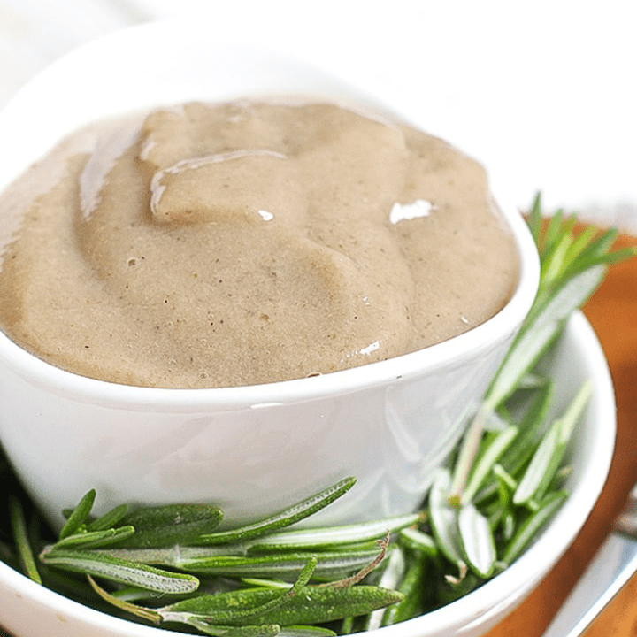

Nutritious Baby Food Mix
This healthy baby food mixture combines
chia seeds, banana, rice, cashew paste, chicken breast,
bone marrow, and Greek yogurt into a creamy and nourishing meal.
It is rich in protein, healthy fats and essential vitamins
making it ideal for babies who are growing and developing.
The soft texture makes it easy to swallow, and the natural sweetness of
banana ensures your little one enjoys every spoon.
Recipe Information
Prep time: 10 minutes
Cooking time: 20 minutes
Servings: 2 small portions
Difficulty Beginner
Ingredients
- 2 table spoons chia seeds
- 1 ripe banana
- 1/2 cup cooked rice
- 2 tablespoons cashew paste
- 50g chicken breast (cooked & shredded)
- One tablespoon bone marrow (boiled & mashed)
- 2 tablespoons Greek yogurt
Instructions
- Cook rice and chicken until tender.
- Boil bone marrow and scoop out the soft part.
- Mash banana and mix with Greek Yogurt.
- Blend rice, chicken, bone marrow, cashew paste and soaked chia seeds until smooth.
- Stir in the banana-yogurt mixture.
- Serve lukewarm, ensuring the temperature is safe for your baby.
Tips
- For a smoother texture, add a little breast milk, formula, or water when blending.
- Always check the temperature before serving to you baby.
- Use fresh and ripe ingredients for the best taste and nutrition.
- Not suitable for babies below six months.
- Do not blend the bones with the bone marrow as they can damage your blender.
- It is best to soak the chia seeds in water before using them.
